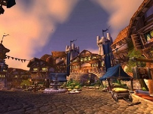
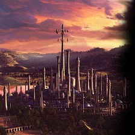

Ключевые места: |
|
Стратхольм |
 |
Даларан |
 |
Крепость Марденхольд |
 |
Крепость Дарнхольд |
 |
| Путеводитель по Лордерону |
Карта местности |
 |
Лордерон- это бывшее королевство людей, также известное как Лордеронская Импреия или Империя Лордерона Восточных Королевств. Его название происходит от двух языков Альянса: дворфийского "лорн" что означает "земля", от всеобщего "даэр" - "люди" и от Талассийского "ронаэ", что значит "мирный". Столица Лордерона также называется Лордерон. Появившись в результате распада Аратора, Лордерон управлялся династией Менетилов. Во время Второй войны Лордерон возглавлял военную компанию второго Альянса против Орочьей Орды, но был практически полностью поглощён Плетью во время Третьей войны. Его бывшая территория долгое время оспаривалась между Плетью, Отрёкшимися, Алым Орденом и Серебрянным рассветом.Ранняя историяКоролевство было основано лордами Строма, столицы Аратора. Столица служила в качестве духовного места для граждан семи человеческих королевств. В истории чётко не документируются события ближайших 1000 лет, но есть несколько, которые, как можно предположить, произошли:
|